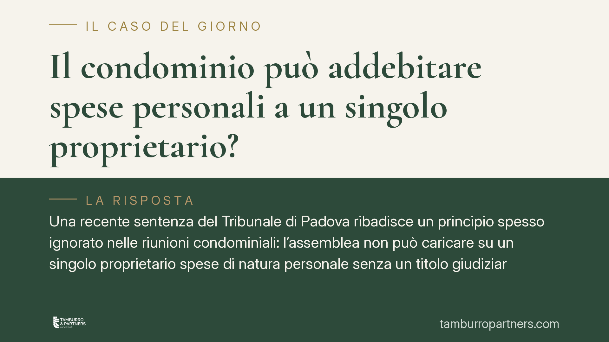

Il condominio può addebitare spese personali a un singolo proprietario?
Una recente sentenza del Tribunale di Padova ribadisce un principio spesso ignorato nelle riunioni condominiali: l'assemblea non può caricare su un singolo proprietario spese di natura personale senza un titolo giudiziario. Chi delibera oltre i propri poteri produce una decisione invalida. Vediamo quali sono i limiti delle competenze assembleari e come reagire a un addebito illegittimo.

Il caso
Capita più spesso di quanto si pensi. L'assemblea, magari infastidita dal comportamento di un condòmino, decide di addebitargli spese che non riguardano le parti comuni: un danno che gli si attribuisce, un costo legale sostenuto "per colpa sua", una somma a titolo quasi sanzionatorio.
Il Tribunale di Padova, con la sentenza n. 1701/2025, ha chiarito che questa strada è preclusa. L'assemblea non è un giudice e non può accertare responsabilità individuali per poi tradurle in un addebito economico. Serve un titolo, cioè una decisione dell'autorità giudiziaria.
Inquadramento normativo
Le competenze dell'assemblea sono elencate all'art. 1135 del codice civile: approvazione del preventivo e del rendiconto, nomina e revoca dell'amministratore, opere di manutenzione straordinaria, ripartizione delle spese comuni. È un elenco che delimita il perimetro del potere assembleare. Fuori da quel perimetro, la delibera è affetta da nullità o annullabilità, a seconda del vizio.
La ripartizione delle spese segue poi l'art. 1123 del codice civile: le spese si dividono tra i condòmini in proporzione ai millesimi, oppure secondo l'uso quando la cosa è destinata a servire in misura diversa. Il principio comune a entrambe le norme è chiaro: l'assemblea gestisce spese *comuni*, non liti *personali*. Una spesa che nasce da un rapporto individuale — un presunto illecito del singolo, un danno a lui imputato — non rientra nella gestione condominiale.
Per trasformare una pretesa verso un condòmino in un obbligo di pagamento occorre passare dal giudice. È lui, non la maggioranza dei presenti, ad accertare se quel proprietario deve davvero qualcosa e in che misura.
Implicazioni pratiche
Per il proprietario singolo il messaggio è rassicurante: una delibera che gli addebita una spesa personale, senza fondamento normativo o titolo giudiziario, è impugnabile. Non è tenuto a subirla passivamente né a pagarla solo perché votata dalla maggioranza.
Attenzione però ai tempi. L'impugnazione delle delibere annullabili va proposta entro trenta giorni — che decorrono dalla riunione per chi era presente e dissenziente, dalla comunicazione del verbale per gli assenti. Superato quel termine, la delibera annullabile si consolida e diventa efficace. Diverso il caso della nullità, che può essere fatta valere senza limiti di tempo: ma la distinzione tra i due vizi non è sempre netta e conviene non giocare d'azzardo sui termini.
Per l'assemblea e l'amministratore la sentenza è un promemoria. Deliberare oltre le competenze espone il condominio al rischio di annullamento e a possibili responsabilità. Se il condominio ritiene di avere una pretesa verso un condòmino, la via corretta è agire in giudizio, non caricare l'importo in bilancio come fosse una spesa ordinaria.
Cosa fare in concreto
- Leggete il verbale con attenzione. Individuate esattamente la voce contestata e verificate se riguarda una spesa comune o un addebito personale.
- Segnate il termine dei trenta giorni. Se eravate presenti e contrari, il conto parte dalla riunione; se assenti, dalla ricezione del verbale.
- Fate mettere a verbale il dissenso. Un voto contrario documentato rafforza la vostra posizione e legittima l'impugnazione.
- Non pagate d'impulso, ma non ignorate l'atto. Consigliamo di valutare la natura del vizio prima di decidere se e come reagire: la scelta tra nullità e annullabilità incide sulle strategie disponibili.
- Rivolgetevi a un professionista prima della scadenza. Il termine di decadenza è breve: attendere può precludere la tutela.
La vicenda ricorda un principio semplice ma decisivo. Il condominio è un ente di gestione, non un tribunale interno. Le sue decisioni valgono finché restano nei confini che la legge assegna all'assemblea. Quando li oltrepassano, il singolo proprietario ha strumenti concreti per farle rimuovere — a condizione di attivarsi nei tempi previsti.
---
*Contributo informativo a cura di Tamburro & Partners - Avv. Giuseppe Tamburro. Non costituisce parere legale.*
Ogni condominio ha una storia a sé.
Se gestisci un'amministrazione e vuoi un confronto su una specifica questione condominiale, scrivi allo studio. Ti rispondiamo entro un giorno lavorativo.